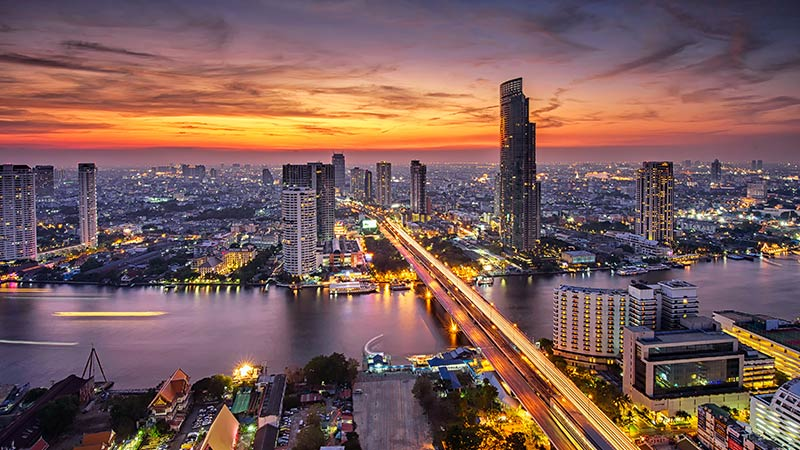

Bangkok
ถ้าพูดถึง กรุงเทพมหานคร หลายคนต้องนึกถึง เมืองใหญ่ ที่มี แม่น้ำเจ้าพระยา ไหลผ่านกลางใจเมือง เต็มไปด้วยวัดวาอารามที่สวยงาม ย่านธุรกิจที่คึกคัก และเป็น เมืองหลวงของประเทศไทย ทำให้ปัจจุบัน กรุงเทพฯ เป็นศูนย์กลางในทุกๆ ด้านของไทยเราค่ะ แน่นอนว่าเมืองหลวงแห่งนี้มีประวัติศาสตร์ที่น่าสนใจไม่แพ้กรุงเก่าอย่าง พระนครศรีอยุธยา เลยทีเดียว ตามเรามารู้จัก กรุงเทพฯ ให้ดีกว่าที่เคยผ่าน ประวัติ กรุงเทพมหานคร ไปดูเรื่องราวกว่าหลายร้อยปี และรู้จักที่เที่ยวสำคัญๆ ในกรุงเทพฯ
